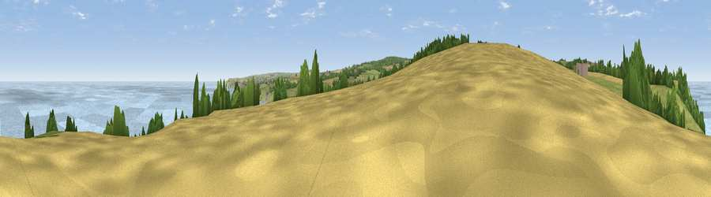

Viewpoint near Sandsend
#3615 in England · top 13% of its area beats it · near SandsendWhere it is
The exact computed spot (NZ 85725 13625). Click the marker for map links.
The view, rendered

A 360° render of this exact spot computed from the terrain model, tree cover and land cover — summer colours, afternoon light, calibrated against photographs of famous viewpoints. Real trees, hedges and buildings will differ in detail.
The panorama
Grey silhouette: terrain skyline in each direction (720 bearings, Earth curvature and refraction included). Dashed green: skyline with trees (+15 m) and buildings (+8 m) as obstacles. Blue strip: how far the ground is visible on each bearing.
Where the view opens
Wedge length = distance to the farthest visible ground on that bearing (vegetation-aware). Rings at 10, 25 and 50 km.
What fills the view
43% water · 27% grassland · 23% woodland · 6% cropland
Angular shares of the visible panorama (visual magnitude), not map area. Landscape diversity 0.55 (0–1 Shannon).
Key numbers
More beautiful places nearby
The staircase of upgrades: each row has a higher view potential than everything closer. Driving times are estimates from straight-line distance, calibrated against real road routing — check an actual route before setting out.
| Place | Direction | Drive | Score |
|---|---|---|---|
| Viewpoint near Lythe | WSW · 1 km | ~2 min | 76.2 |
| Viewpoint near Lythe | NW · 1 km | ~3 min | 76.4 |
| Viewpoint near Lythe | NW · 3 km | ~7 min | 81.3 |
| Beacon Hill | NW · 8 km | ~16 min | 82.3 |
| Viewpoint near Robin Hood's Bay | SE · 11 km | ~22 min | 83.3 |
| Viewpoint near Easington | WNW · 12 km | ~22 min | 86.9 |
| Viewpoint near Easington | WNW · 13 km | ~24 min | 90.2 |
| The Knoll | SSW · 446 km | ~417 min | 91.0 |
54.51069, -0.67746 · source: screening · position refined by local search. Computed location — check access rights before visiting.